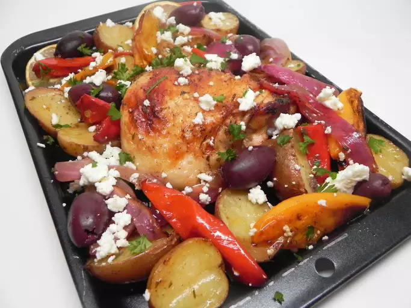

Mediterranean Chicken

Bold flavors and colors combine on one sheet pan for a simple yet impressive dinner. Bonus is the minimal cleanup!
- Cook Time 55 min
- Servings 4
Ingredients
- ¼ cup extra-virgin olive oil
- lemon, juiced
- 2 tablespoons balsamic vinegar
- 1 teaspoon dried tarragon
- 1 teaspoon dried oregano
- 1 teaspoon paprika
- 1 teaspoon salt
- ½ teaspoon black pepper
- 4 chicken thighs with skin
- 1 small red onion, sliced into petals
- 8 mini bell peppers, halved lengthwise and seeded
- 1 pound baby potatoes, halved
- 1 lemon, sliced
- ¼ cup crumbled feta cheese
- ¼ cup fresh parsley, chopped
- 8 pitted kalamata olives
Steps
- Preheat the oven to 425 degrees F (220 degrees C). Line a large rimmed baking sheet with aluminum foil.
- Whisk olive oil, juice of 1 lemon, vinegar, tarragon, oregano, paprika, salt, and pepper together in a large bowl. Add chicken thighs, onion, baby bell peppers, and potatoes. Stir until everything is evenly coated.
- Transfer vegetable-chicken mixture to the prepared baking sheet and spread in an even layer. Scatter lemon slices over the vegetables, making sure to leave the chicken uncovered so that the skin will brown.
- Bake in preheated oven for about 40 minutes. Remove from oven and top with feta, parsley, and olives.
Cook's Note
If you are not a fan of olives, try substituting capers or chopped artichoke hearts.